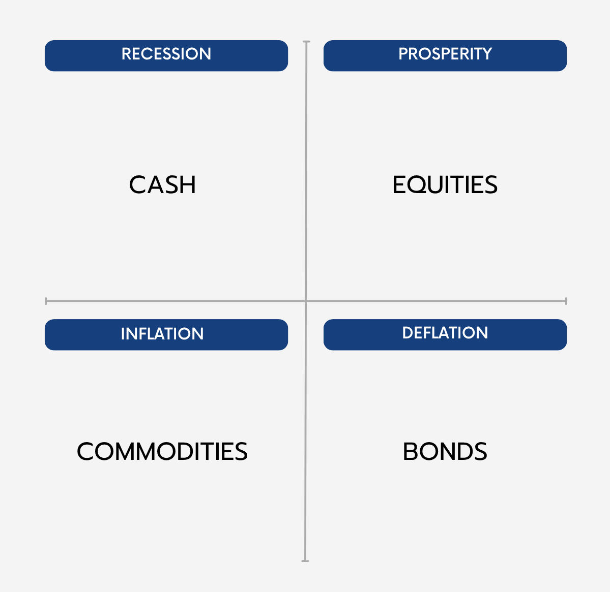

The All-Terrain Portfolio is a resilient investment strategy designed to deliver robust performance across all economic conditions—recession, prosperity, inflation, and deflation. By allocating to cash, equities, commodities, and bonds correspondingly, it ensures that at least one asset thrives no matter the economic climate.
Building on this macroeconomic foundation, the fully diversified portfolio strategically allocates its capital so that each asset contributes equally to the investor's total risk budget. The result is a balanced mix designed to minimize volatility while maximizing return through all possible economic vicissitudes. The precise portfolio breakdown is as follows.